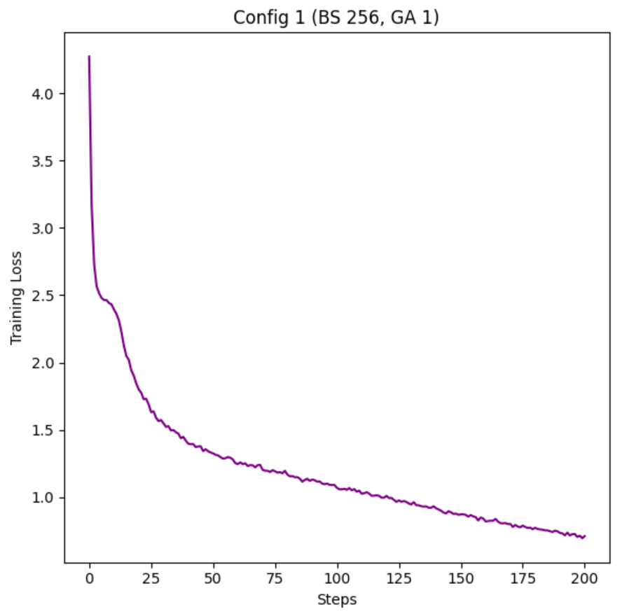
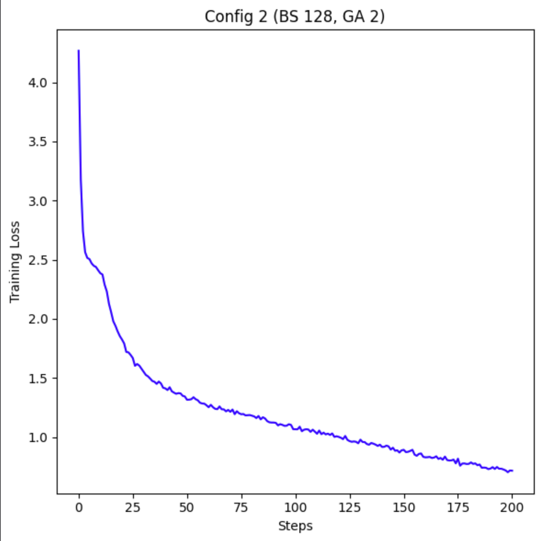
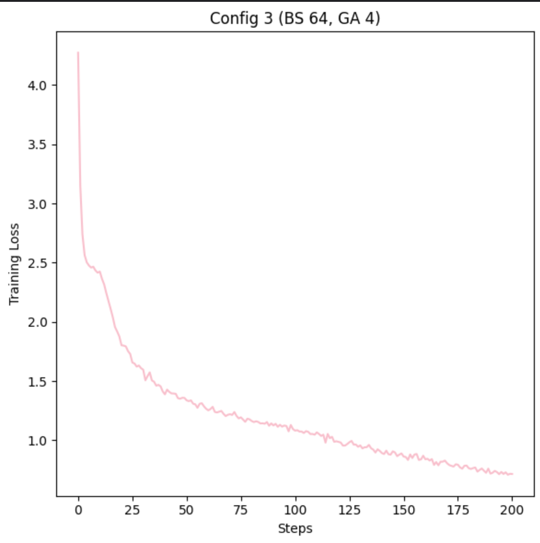
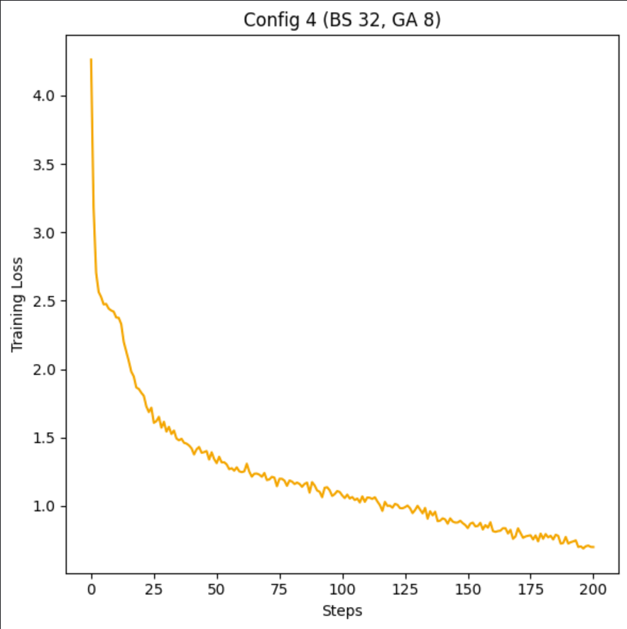
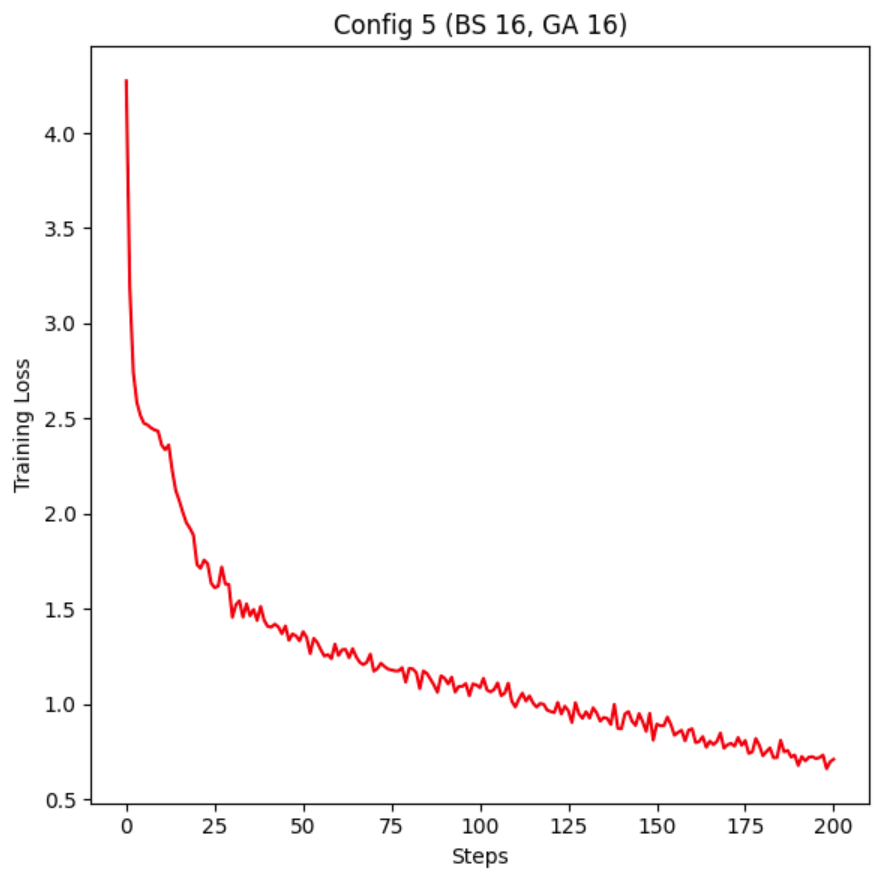
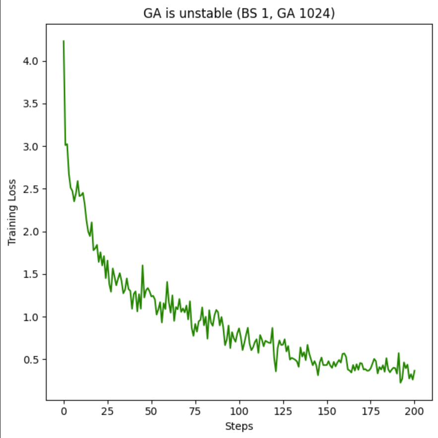

This is a quick set of experiments I did before being exiled to Colorado for a week, based on the large number of r/locallama users who seem to think that batch_size and gradient accumulation are these different things that fundamentally change the model.
I show 5 configs with different Batch_Size and Grad_Acc values, proving the weights the same through Jaccard similarity, then move on to show that Batch_Size should always be maxed out before you start using Grad_Acc, if you care about stability.
Gradient accumulation and batch size are mathematically equivalent
Large batch size: compute all the loss and gradients simultaneously, average it out, update model
Large grad accumulation: compute loss and gradients in minibatches, no model update until model has accumulated enough gradients, then avg them and update, or in other words, the same stuff in a different order
Reference material: kaggle nb github model weights
every model is 12.6M params, each config is 65K toks/s
config table:
| Config | Batch Size | Grad Accum |
|---|---|---|
| Config 1 | 256 | 1 |
| Config 2 | 128 | 2 |
| Config 3 | 64 | 4 |
| Config 4 | 32 | 8 |
| Config 5 | 16 | 16 |
all the stats:
| Config | final train loss | mfu | step time |
|---|---|---|---|
| Config 1 | 0.7116 | 4.5% | 370ms |
| Config 2 | 0.7161 | 5.1% | 330ms |
| Config 3 | 0.7151 | 4.8% | 350ms |
| Config 4 | 0.699 | 5% | 350ms |
| Config 5 | 0.710 | 4.5% | 400ms |
As we see, overall, all the stats are really similar for each config, nothing special in changing the Batch_Size or Grad_Acc.
Time for the real question, are the weights the same???
I used Jaccard similarity on the weights, and yeah they are the same:
from jacc_sim.py
The similarity between the two files f1 and f2 is: 100.00%
The similarity between the two files f2 and f3 is: 100.00%
The similarity between the two files f3 and f4 is: 100.00%
The similarity between the two files f4 and f5 is: 100.00%
The similarity between the two files f5 and f1 is: 100.00%
the jacc_sim function
def jaccard_similarity(content1, content2):
"""Calculates the Jaccard similarity index between two binary contents."""
set1 = set(content1)
set2 = set(content2)
intersection = set1.intersection(set2)
union = set1.union(set2)
return len(intersection) / len(union) * 100
A concern effect from over using Grad_Acc, the loss of training Stability:
     
As you can see, with greater Grad_Acc, the model gets more and more training spikes, and this stuff is not good for your LM if you want to a stable train. For good results, try your best to Max out VRAM then go for a Grad_Acc of 16 or less
This study provides empirical evidence that batch size and gradient accumulation are mathematically equivalent in their effects on model training, contrary to some popular beliefs.
Through a series of experiments with five different configurations, we demonstrated that varying the batch size and gradient accumulation while maintaining a constant tokens-per-second rate results in remarkably similar training outcomes, and that excessive batch_size leads to less stable training runs